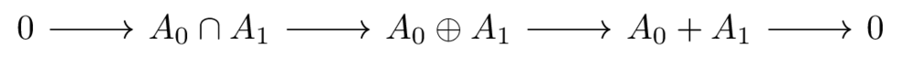
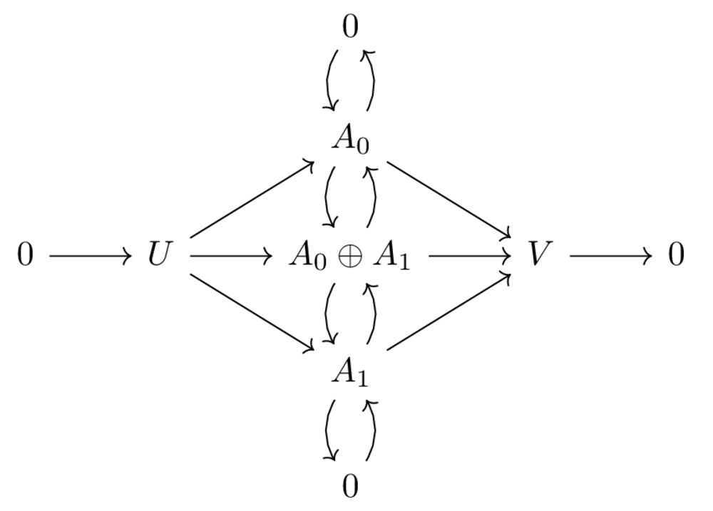
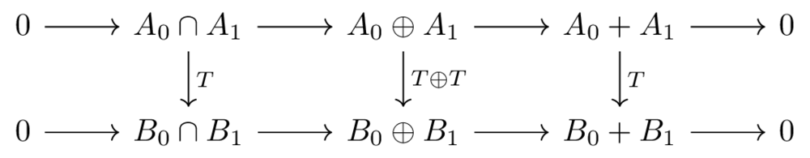
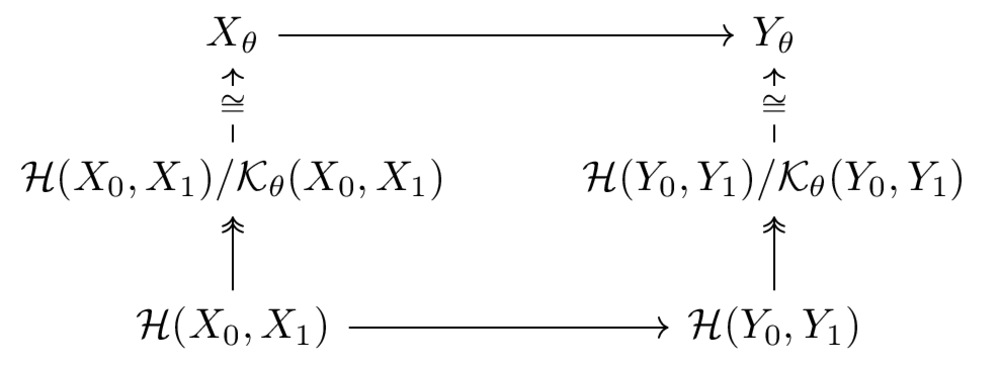
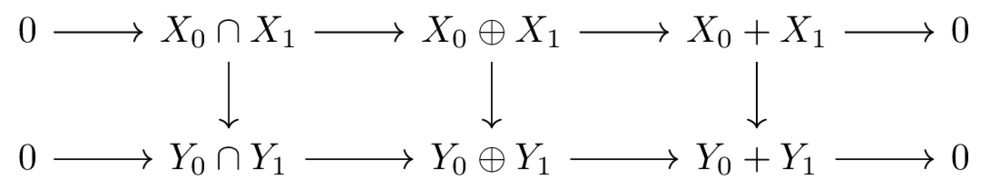
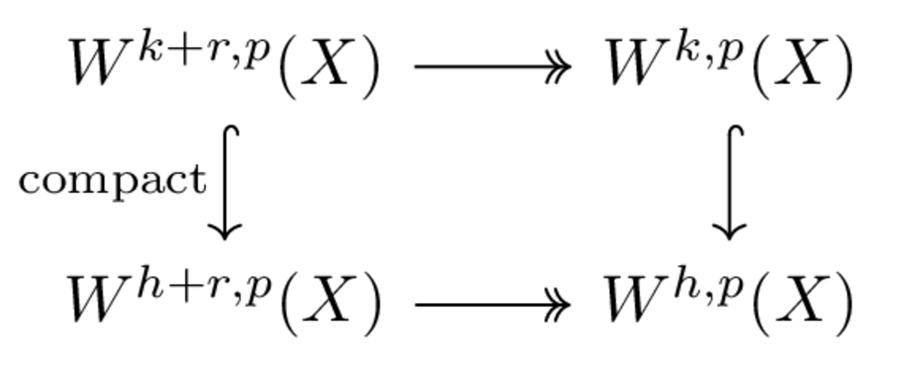

Interpolation theory and Sobolev spaces on compact manifolds
Table of Contents
The PDF version of this page can be downloaded by replacing html in the its address by
pdf.
For example /html/sheaf-cohomology.html should become /pdf/sheaf-cohomology.pdf.
1 Motivation
We will define a more general notion of Sobolev spaces on compact manifold than those in aubin_nonlinear_1998 and jost_riemannian_2008, where Sobolev spaces on a (Riemannian) manifold \( W^{k,p}(M) \) of dimension \( n \) are defined for \( k\in \mathbb{Z}_{\geq 0} \) and for uniform weight, i.e. a function \( f\in W^{k,p}(M) \) is supposed to be weakly differentiable up to order \( k \) in every variables \( x_1,\dots, x_n \) in each smooth coordinates. The space \( W^{k,p}(M) \) in this case can be defined by density with respect to a certain norm involving derivatives \( \frac{\partial f}{\partial x^\alpha} \).
Meanwhile, the suitable function spaces to solve parabolic equations are those whose regularity in time is half of that in space, i.e. we will solve parabolic equations on the Sobolev spaces \( W^{k,p}(M\times T) \) of functions \( k \) times regular in \( M \) and \( k/2 \) times regular in \( T \). We cannot always, (for example when \( k \) is odd) find a simple norm involving derivatives of \( f \) in order to define \( W^{k,p} \) by density. This generalisation will be done using Stein's multipliers.
Another generalisation will be made is to allow the manifold to have boundary. Even when we only want to solve parabolic equation on manifold \( M \) without boundary, the underlying space is \( M\times [0, T] \) which has boundary. Moreover, we will have to discuss the notion of trace in order to use the initial condition at \( t=0 \).
All manifolds will be compact, with no given metric. This is not really a generalisation since on compact manifolds, Sobolev spaces \( W^{k,p}(M) \), as defined in aubin_nonlinear_1998 and jost_riemannian_2008 set theoretically do not depend on the metric and (the equivalent class of) their norms also independent of the metric.
We will mainly follow the discussion in hamilton_harmonic_1975, where the author also works on manifold with corner, i.e. irregular boundary. The corners, modeled by \( \mathbb{R}^{n-k}\times \mathbb{R}_{\geq 0}^k \), appear naturally, for example at the boundary \( \partial M \) in \( t=0 \). The extra effort to cover the case of corners is not much (see hamilton_harmonic_1975) and essentially algebraic.
The advantage of this approach (Stein's multipliers and interpolation theory) over the definition by density is that it is based on an algebraic framework compatible with compact operators and capable of formulating analytic result economically. For example, 3 classical results of elliptic equations (existence and approximate solution, regularity, Garding's inequality) can be nicely encoded in a commutative diagram and can be proved at the same time (and the proof is essentially algebraic), see this post.
2 Preparatory material
We will recall here basic elements of Fourier transform on the space of tempered distributions and then we will have a quick review of interpolation theory.
2.1 Stein's multiplier
Let \( X = \mathbb{R}^n \) be the Euclidean space, coordinated by \( x_1,\dots, x_n \) and \( \mathcal{E}= \mathbb{R}^n \), coordinated by \( \xi_1,\dots,\xi_n \) be the frequency domain of \( X \). Recall that Fourier transform is an isomorphism in the following three levels
- The Schwartz space of rapidly decreasing smooth functions \( \mathcal{S}(X) \) whose elements are smooth and decrease more rapidly then any rational function. The Schwartz space are topologized by the family of semi-norms \( |f|_{\alpha,\beta}= \sup_X |x^{\alpha} D^b_x f(x)| \).
- The space \( L^2(X) \) of doubly-integrable functions.
- The space of tempered distributions, i.e. the dual space \(\mathcal{S}^*(X) \) of \( \mathcal{S}(X) \) under the weak-* topology given by \( \mathcal{S}(X) \).
To simplify the notation, we use \( D^\alpha_x = \left(\frac{1}{i}\frac{\partial}{\partial x_1}\right)^{\alpha_1} \dots \left(\frac{1}{i}\frac{\partial}{\partial x_n}\right)^{\alpha_n}\) and \( P(D) = \sum_\alpha c_\alpha D^\alpha \) for any polynomial \( P \).
Recall that for any \( u\in \mathcal{S}(X) \) and for any polynomial \( P \), one has \( \widehat{P(D)u} = P(\xi)\hat u(\xi) \). This can be extended to non-polynomial function of \( M(D) \) of \( D \) by \[ \widehat{M(D)u} := M(\xi)\hat u(\xi) \] where \( M \) is a slowly growing function, i.e. \( D^\alpha M(\xi) \) grows slower than certain polynomial as \( |\xi|\to \infty \).
The following theorem give a criteria of the function \( M \) such that \( M(D): \mathcal{S}(X) \longrightarrow \mathcal{S}(X) \) extend to \( L^p(X) \longrightarrow L^p(X) \).
If for any primitive index \( \alpha=(\alpha_1,\dots,\alpha_n) \), i.e. each \( \alpha_i \) being \( 0 \) or \( 1 \) (there are exactly \( 2^n \) primitive indices), one has \[ \left| \xi^\alpha D^\alpha M(\xi)\right| \leq C_\alpha \] then \( M(D) \) extend to a bounded linear operator on \( L^p(X) \).
- A slowly growing function \( W \) on \( \mathcal{E} \) with \( W(\xi)>0 \) is called a weight if for all primitive index \( \alpha \), one has \[ \left|\xi^\alpha D^\alpha W(\xi)\right|\leq C_\alpha W(\xi). \]
- The Sobolev space \( W^{k,p}(X,W) \) with respect to weight \( W \), \( k\in
\mathbb{R}, 1
Note by \( \sigma:= \lcm(\sigma_1,\dots,\sigma_n) \) then \( W_\Sigma(\xi) = \left( 1 + \xi_1^{2\sigma_1} + \dots + \xi_n^{2\sigma_n} \right)^{1/2\sigma} \) is a weight. We will only use weights of this type in our discussion. The index \( \Sigma = (\sigma_1,\dots,\sigma_n) \) is chosen according to the differential operator in the elliptic/parabolic equation. In particular, for Laplace equation, one choose \( \Sigma=(1,\dots, 1) \) and for heat equation \( \Sigma = (1,2,\dots, 2) \) where \( 1 \) is in the time component.
- If \( W_1,W_2 \) are weights then \( W_1 + s W_2, W_1 W_2, W_1^s (s>0)\) are also weights.
- The operator \( W(D):\ W^{k+r},p(X,W) \longrightarrow W^{k,p}(X) \) is bounded.
- Given another weight \( V(\xi) \leq C W(\xi) \), by Stein's criteria (Theorem thm:stein-crit) one has a bounded embedding \( W^{k,p}(X,W) \hookrightarrow W^{k,p}(X,V) \).
The Sobolev space \( W^{k,p}(X,W_\Sigma \) has a simple definition by density when \( \sigma \mid k \). Given an index \( \alpha = (\alpha_1,\dots,\alpha_n) \), note by \( \|\alpha\| := \sum_{i=1}^n \alpha_i \frac{\sigma}{\sigma_i}. \)
If \( k>0 \) and \( \sigma \mid k \) and \( 1
- When \( \sigma_1=\dots=\sigma_n=1 \), one has the familiar Sobolev spaces.
- For (the weight of) heat equation, \( W^{2,p} \) cam be defined by density using the norm \[ \|u(t,x)\| = \left\|\frac{\partial u}{\partial t}\right\|_{L^p} + \left\|Du \right\|_{L^p} + \left\|D u\right\|_{L^p} \] where \( L^p \) stands for \( L^p(X\times [0,T]) \).
2.2 Holomorphic interpolation of Banach spaces
The Interpolation theory is based on the following Three-lines theorem whose proof follows from the classic Hadamard's three-lines theorem (the case \( A=\mathbb{C} \)) and how we define complex Banach spaces and holomorphic functions taking value there.
Let \( A \) be a complex Banach space and \( h:\ S=\left \{0\leq \re z\leq 1\right\}\subset \mathbb{C} \longrightarrow A \) be a holomorphic function, i.e. continuous and holomorphic in the interior such that \( h \) is bounded at infinity, i.e. \( h(x+iy) \to 0 \) as \( y \to \infty \). Let \( M(x):=\sup_y \|h(x+iy)\| \) then one has \[ M(x)\leq M(1)^x M(0)^{1-x} \]
Let \( A_0, A_1 \) be complex Banach spaces such that
- \( A_0, A_1 \) can be continuously embedded into a Hausdorff topological complex vector space \( E \) such that the complex structures are compatible with each others, i.e. the linear embeddings preserve complex structures.
- The intersection \( A_0\cap A_1 \) in \( E \) is dense in \( (A_i,\|\|_{A_i}) \) for \( i=0,1 \).
such \( (A_0,A_1) \) is called an interpolatable pair.
The norms of \( A_0\cap A_1 \) and \( A_0 + A_1 \) are defined such that the these spaces are Banach and the diagram in Figure fig:interpol-pair commutes and the arrows are continuous. By Open mapping theorem, this means that the norm on \( A_0\cap A_1 \) is equivalent to \( \|x\|_{A_0\cap A_1} = \|x\|_{A_0} + \|x\|_{A_1} \) and the norm on \( A_0+A_1 \) is equivalent to \( \|x\|_{A_0+ A_1} = \inf_{x=x_0 + x_1, x_i\in A_i} \left\{\|x_0\|_{A_0} + \|x\|_{A_1}\right\} \).

A pair \( (A_0, A_1) \) of Banach spaces may give different interpolatable pairs depending how they are embedded into a common space \( E \). It is not difficult to see that the data of interpolatable pair is uniquely determined by 2 complex Banach spaces \( U,V \) (which are eventually \( A\cap B \) and \( A+B \)) and the diagram in Figure fig:unique-interpol-pair in which
- All arrows are continuous and compatible with complex structures. The vertical sequence is exact, the horizontal sequence is exact and canonical.
- The diagonal arrows from \( U \) to \( A_0, A_1 \) are injective and of dense image in \( A_0, A_1 \).
- The maps composed by the diagonal arrows \( U \to A_i \to V \) are injective for \( i=0,1 \). Since the two maps are additive inverse, it suffices to have injectivity for one of them.

Figure 2: The data of interpolatable pair is uniquely defined by this diagram.
The following construction will give a family of complex subspace \( A_\theta \) of \( A_0+A_1 \) containing \( A_0\cap A_1 \) for \( 0\leq \theta\leq 1 \) that interpolates \( A_0 \) and \( A_1 \) that satisfies the following properties, called interpolation inequalities
Let \( a\in A_0\cap A_1 \) then \( a\in A_\theta \) and \[ \|a\|_{A_\theta}\leq 2 \|a\|_{A_1}^\theta \|a\|_{A_0}^{1-\theta} \]
and
Given interpolatable pairs \( (A_0,A_1) \) and \( B_0, B_1) \), and \( T \) a bounded linear operator \( T: A_0 \longrightarrow B_0 \) and \( T: A_1 \longrightarrow B_1 \) such that \( T \) is well-defined on \( A_0\cap A_1 \). Then \( T \) extends linearly and continuously to \( T:\ A_0+A_1 \longrightarrow B_0+ B_1 \), that is

Also, \( T \) defines a bounded operator \( T:\ A_\theta \longrightarrow B_\theta \) and \[ \|T\|_{L(A_\theta,B_\theta)}\leq 2 \|E\|_{L(A_1,B_1)}^\theta \|E\|_{L(A_0,B_0)}^{1-\theta} \]
To define \( A_\theta \), let \[ \mathcal{H}(A_0,A_1):= \left\{ h: S \longrightarrow A_0+ A_1:\ h \text{ is holomorphic and } h(z) \to 0 \text{ as } |y| \to\infty, h(iy)\in A_0,\ h(1+iy)\in A_1 \right\} \] where, as above, \( S \) denotes the strip \( 0\leq \re z\leq 1 \). Then \( \mathcal{H}(A_0, A_1) \) is a Banach space with the norm \[ \|h\|_{\mathcal{H}(A_0, A_1)}:= \sup_y \|h(iy)\|_{A_0} + \sup_y \| h(1+iy)\|_{A_1} \]
The space \( A_\theta \) is defined set-theoretically as the space of all value in \( A_0+ A_1\) that a function \( h\in \mathcal{H}(A_0, A_1) \) can take at \( \theta\in [0,1]\in S \). Therefore, set-theoretically \( A_\theta \) coincides with \( A_0 \) and \( A_1 \) when \( \theta=0 \) and \( \theta=1 \). To define the norm on \(A_\theta \), let \[ \mathcal{K}_\theta(A_0, A_1):= \left\{h\in \mathcal{H}(A_0, A_1):\ h(\theta)=0 \right\} \] then \( \mathcal{K}_\theta(A_0,A_1) \) is a closed complex subspace of the Banach space \( \mathcal{H}(A_0, A_1) \). Then \( A_\theta:= \mathcal{H}(A_0, A_1)/ \mathcal{K}_\theta(A_0, A_1) \) has the natural quotient norm inherited from \( \mathcal{H}(A_0, A_1) \) and is still a Banach space.
It is not difficult to see that the norm on \( A_\theta \) coincides with the norm \( \|\cdot\|_{A_0} , \|\cdot\|_{A_1}\) when \( \theta=0 \) or \( \theta=1 \)
Theorem thm:interp-ineq-ele follows from the this lemma when one takes \( h \) to be a constant, and is in \( A_0\cap A_1 \).
If \( h\in \mathcal{H}(A_0, A_1) \) then \( \| h(\theta)\|_{A_\theta}\leq 2 M_1^{\theta} M_0^{1-\theta} \) where \[ M_0:= \sup_y \|h(iy)\|_{A_0} ,\quad M_1:=\sup_y \| h(1+iy)\|_{A_1} \]
The \( A_\theta \)-norm of \( h(\theta) \) only depends on the value of \( h\) at \(\theta \), one can therefore replace \( h \) by a function of form \( h_{c,\epsilon}(z) = \exp (c(z-\theta) + \epsilon z^2) h(z) \), then let \( \epsilon\to 0 \) and choose the optimal \( c \), which is \( e^c=M_0/M_1 \).
Theorem thm:interp-ineq-op follows from Theorem thm:interp-ineq-ele and the very definition of quotient norm.
The optimal constant, as given by the proofs, is \(\theta^{-\theta}(1-\theta)^{\theta-1} < 2 \)
The interest of holomorphic interpolation theory comes from the fact that interpolation of Sobolev spaces are still Sobolev spaces, which, together with Theorem thm:interp-ineq-op and Theorem thm:interp-ineq-ele, gives a class of useful inequalities generally called interpolation inequalities.
Let \( p,q\in (1,+\infty) \) and \( k,l\in \mathbb{R} \) and \( X=\mathbb{R}^n \). Take \[ A_0:= W^{k,p}(X),\quad A_1:=W^{l,q}(X) \] then \( A_\theta=W^{s,r}(X) \) where \[ \theta l + (1-\theta)k = s,\qquad \theta \frac{1}{q} + (1-\theta) \frac{1}{p} = \frac{1}{r} \]
The holomorphic interpolation behaves predictably with direct sum and compact operators
Let \( (A_0,A_1), (B_0, B_1) \) be interpolatable pairs and denotes by \( (A\oplus B)_\theta \) be the interpolation of \( A_0 \oplus B_0 \) and \( A_1 \oplus B_1 \) then one has \( (A\oplus B)_\theta \cong A_\theta \oplus B_\theta \) by a canonical isomorphism.
The set-theoretical bijection is easy to see: note that there is a natural inclusion \( (A\oplus B)_\theta \hookrightarrow A_\theta\oplus B_\theta \), which is also a bijection because \( \mathcal{H}(A_0\oplus B_0, A_1 \oplus B_1) = \mathcal{H}(A_0, A_1) \oplus \mathcal{H}(B_0,B_1) \).
The most difficult part is to know what we mean by isomorphism. In fact the two norms (the interpolation norm and the direct-sum norm) do not coincide, but they are equivalent. One can prove, with basic sup-inf analysis that \[ \frac{1}{2}\|\cdot \|_{A_\theta\oplus B_\theta} \leq \|\cdot \|_{(A\oplus B)_\theta} \leq \|\cdot\|_{A_\theta \oplus B_\theta} \]
Theorem thm:dir-sum-interp can be generalised to the following result.
Let \( (X_0, X_1) \) and \( (Y_0, Y_1) \) be interpolatable pairs. Suppose that there are inclusion \(X_0 \hookrightarrow Y_0\) and \( X_1 \hookrightarrow Y_1\) with closed images in \( Y_0 \) and \( Y_1 \) respectively and the inclusions agree on \( X_0 \cap X_1 \) as mappings from \( X_0\cap X_1 \) to \( Y_0 + Y_1 \). Then there is a natural inclusion \( X_\theta \hookrightarrow Y_\theta \) with closed image in \( Y_\theta \)
- Open mapping theorem guarantees that for any continuous inclusions of Banach spaces \( X \hookrightarrow Y \) with closed image, the inherent norm of the \( X \) is equivalent to the induced norm from \( Y \).
If one has two exact sequences
\begin{equation} \label{eq:ses-interp} 0 \longrightarrow X_i \longrightarrow Y_i \longrightarrow Z_i \longrightarrow 0,\quad i=0,1 \end{equation}whose arrows commute with ones from the intersection and ambient spaces of interpolatable pairs \( (X_0,X_1), (Y_0, Y_1), (Z_0, Z_1) \) then, since the images of \( X_i \longrightarrow Y_i \) being kernel of \( Y_i \longrightarrow Z_i \) are closed, one has the inclusion for interpolation spaces, also of closed image: \[ 0 \longrightarrow X_\theta \longrightarrow Y_\theta,\quad 0\leq\theta\leq 1 \] I am not sure if this exact sequence can be extended to \( Z_\theta \) in general.
- In particular, if the sequences in eq:ses-interp split, meaning that one can find a retraction \( 0 \longrightarrow Z_i \longrightarrow Y_i \), then by applying the theorem for the retractions, one sees that the interpolation sequence extend to \( Z_\theta \), i.e. \[ 0 \longrightarrow X_\theta \longrightarrow Y_\theta \longrightarrow Z_\theta \longrightarrow 0 \] and also splits, meaning \( Y_\theta \cong X_\theta \oplus Z_\theta \). Applying this results to the split-exact sequences \[ 0 \longrightarrow A_i \longrightarrow A_i\oplus B_i \longrightarrow B_i \longrightarrow 0\] one then obtains Theorem thm:dir-sum-interp.
The inclusion \( X_\theta \hookrightarrow Y_\theta \) is natural and due to the fact that \( \mathcal{H}(X_0, X_1) \subset \mathcal{H}(Y_0, Y_1) \). The equivalence of the interpolation norm \( X_\theta \) and the norm inherited from \( Y_\theta \) on \( X_\theta \) requires more than a simple sup-inf analysis as in the proof of Theorem thm:dir-sum-interp since \( \mathcal{H}(X_0, X_1) \) is strictly included in \( \mathcal{H}(Y_0, Y_1) \). What we can say is that the interpolation norm \( X_\theta \) dominates the interpolation norm of \( Y_\theta \), since it involves the infimum on the smaller set. In other words, it means that the inclusion \( X_\theta \hookrightarrow Y_\theta \) is continuous. Therefore, to establish the equivalence of norms, it remains, by Open mapping theorem, to check that the image of \( X_\theta \hookrightarrow Y_\theta \) is closed.
Since

it suffices to show that the image \( \mathcal{H}(X_0,X_1) \hookrightarrow \mathcal{H}(Y_0,Y_1) \) is closed, meaning if \(\mathcal{H}(X_0,X_1)\ni h_n \to h \) in \( \mathcal{H}(Y_0,Y_1) \), then \( h \) must take value in \( X_0 + X_1 \). By the equivalence of the norm on \( X_i \) and the restricted norm from \( Y_i \), \( i=0,1 \), one sees that \( h(iy)\in A_0 \) and \( h(1+iy)\in A_1 \).
It suffices to show that \( X_0+X_1 \) is closed in \( Y_0+Y_1 \), then any holomorphic map \( \mathcal{H}(Y_0,Y_1)\ni f: S \longrightarrow Y_0+Y_1 \) passes holomorphically to the quotient \( S \longrightarrow (Y_0 +Y_1) /(X_0+X_1)\). The fact that \( h \) takes value in \( X_0 + X_1 \) follows from Maximum modulus principle for holomorphic functions.
The closedness of \( X_0+X_1 \) in \( Y_0+Y_1 \) follows from the diagram:

where the inclusion \( X_0 \oplus X_1 \hookrightarrow Y_0 \oplus Y_1 \) is of closed image.
If \( A_1 \hookrightarrow A_0 \) is a compact embedding, then \( A_1 \cong A_0\cap A_1 \hookrightarrow A_0 \) is a compact embedding where the first \( \cong \) denotes the same space with equivalent norms.
It follows from Theorem thm:interp-ineq-ele: \[ \|x_m - x_n\|_{A_\theta}\leq 2 \|x_m-x_n\|^{1-\theta}_{A_0} \|x_m-x_n\|_{A_1}^\theta \] Hence if \( \{x_n\} \) is a bounded sequence in \( A_1 \), it converges in \( A_0 \) and therefore \( A_\theta \).
The previous Theorem thm:interp-ineq-ele, together with Theorem thm:interp-sobolev also gives a proof of Kondrachov's Theorem, that is the embedding \( W^{k,p}(X) \hookrightarrow W^{l,p}(X) \) is compact if \( k>h>\geq 0 \). This follows from the following 2 remarks
- The case \( l=0 \) and \( k\gg 1 \) follows from the embedding \( W^{k,p}
\hookrightarrow C^1 \) and Ascoli's theorem. Hence by Theorem thm:interp-ineq-ele,
one has the compactness embedding if \( k \gg 1 \) and \( l
For the case of small \( k \), note that \[ W^{k+r,p}(X) \twoheadrightarrow W^{k,p}(X):\ v \mapsto W(D)^r u \] is surjective and any \( u\in W^{k,p}(X) \) can be lifted to an element \( \tilde u\in W^{k+r,p}(X) \) of the same norm. In fact, if \( W(\xi)^k \hat u \in L^p \) then choose \( \tilde u \) such that \( \widehat{\tilde u} = W(\xi)^{-r} \hat u \). Kondrachov's theorem follows from the diagram:

The advantage of this proof is that it is valid for weighted Sobolev spaces over manifolds.
3 Sobolev spaces on compact manifold without boundary
Let \( M \) be a compact manifold without boundary. We fix a finite atlas of \( M \) by chart \( \varphi_i:\ M\supset U_i \longrightarrow V_i \subset \mathbb{R}^n \) such that the transitions \( \varphi_{ij}=\varphi_i \circ \varphi_j^{-1}: V_j \longrightarrow V_i \) are of strictly positive and bounded derivatives, i.e. \( C(\alpha)^{-1}\geq D^\alpha \varphi_{ij}\leq C(\alpha) \) for all indices \( \alpha \). We will called such atlas a good atlas. One can always obtain such atlas by shrinking a bit each chart of a given atlas of \( M \). Let \( \psi_i \) be a partition of unity subordinated to \( \{U_i\} \)
- The Sobolev spaces \( W^{k,p}(M) \) is defined as \[ W^{k,p}(M):=\left\{ f\in \mathcal{S}(M)^*:\ \psi_i f\in W^{k,p}(\mathbb{R}^n)\right\} \] with the norm \[ \|f\|_{W^{k,p}}= \sum_i \|(\psi_i f)\circ \varphi_i^{-1}\|_{W^{k,p}(\mathbb{R}^n)} \]
- Weighted Sobolev spaces can be defined when \( M \) has a foliation structure, i.e. \(M \) is locally modeled by
\( 0\subsetneq F_1\subsetneq \dots \subset F_k \subsetneq \mathbb{R}^n \) where
\( F_i \) are vector subspace of \( \mathbb{R^n} \) of dimension
\( 0
- One can define \( \mathcal{S}(M)^* \) as the dual space of \( \mathcal{S}(M) = C^\infty(M) \) under Schwartz topology with respect to any metric, since by compactness any two metrics on \( M \) are comparable. The distributions \(\psi_i f\) are tempered because they are compactly supported.
- One can identify \( C^\infty(M) \) with a subspace of \( \mathcal{S}^*(M) \) that is contained in any Sobolev space \( W^{k,p}(M) \) by fixing a Riemannian metric \( g \) on \( M \). The map \( C^\infty(M) \hookrightarrow \mathcal{S}^*(M) \) may depend on the \( g \), but its image does not. Similarly, one can also identify an element of \( \mathbb{W}^{k,p}(\mathbb{R}^n) \) supported in \( V_i \) with an element in \( W^{k,p}(M) \).
- If one uses another good atlas \( U'_i \) or a different partition of unity, one obtains the same set \( W^{k,p}(M) \) and an equivalent norm. To see this, let us call two good atlas compatible if their union is also a good atlas, then the statement holds for two compatible atlas by comparing their union. Moreover, for any two arbitrary good atlas \( \{U_i\},\{U'_j\} \), one can find a good atlas compatible to both of them by shrinking their union.
By definition, one has an inclusion \(i:\ W^{k,p}(M) \hookrightarrow \bigoplus_i W^{k,p}(\mathbb{R}^n) \). Also \( i \) is of closed image because one can find a projection \( j:\ \bigoplus W^{k,p}(\mathbb{R}^n) \longrightarrow W^{k,p}(M) \) with \( j\circ i = {\rm Id} \). In fact, let \( \tilde \psi_i \) be functions supported in \( U_i \) that equal \( 1 \) in the support of \( \psi_i \), then \[ j:\ g\mapsto \sum \tilde \psi_i. (g\circ \varphi_i) \] works. The continuity of \( j \) follows from straight-forward calculations.
The closedness of image of \( i \) is equivalent to the fact that \( W^{k,p}(M) \) is complete.
Although \( i \) preserves the norm of \( W^{k,p}(M) \) and has a right-inverse, it is far from being an isomorphism (it is not surjective). Each component of an element in the image of \( i \) tends to 0 on the boundary of \( V_i \) (take \( k \gg 1 \) then everyone is continuous by Sobolev embedding, there is no subtlety in what we mean by "tends to 0"). hamilton_harmonic_1975 seems to claim that \( i \) is an isomorphism and apply Theorem thm:dir-sum-interp repeatedly to deduce Theorem thm:interp-sobolev for Sobolev spaces on manifold, then the Sobolev embedding \( W^{k,p} \hookrightarrow C^{l}(M) \) and Kondrachov's theorem.
The above results are true and the correction is not difficult (use Theorem thm:interp-closed-emb).
4 Sobolev spaces on compact manifold with boundary
4.1 Sobolev spaces on half-plan
4.2 Trace theorems
4.3 Generalisation to manifold